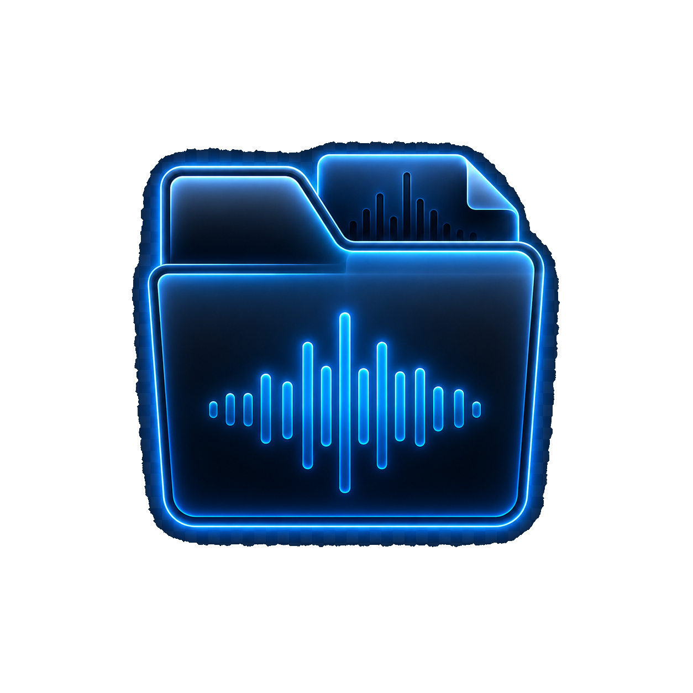
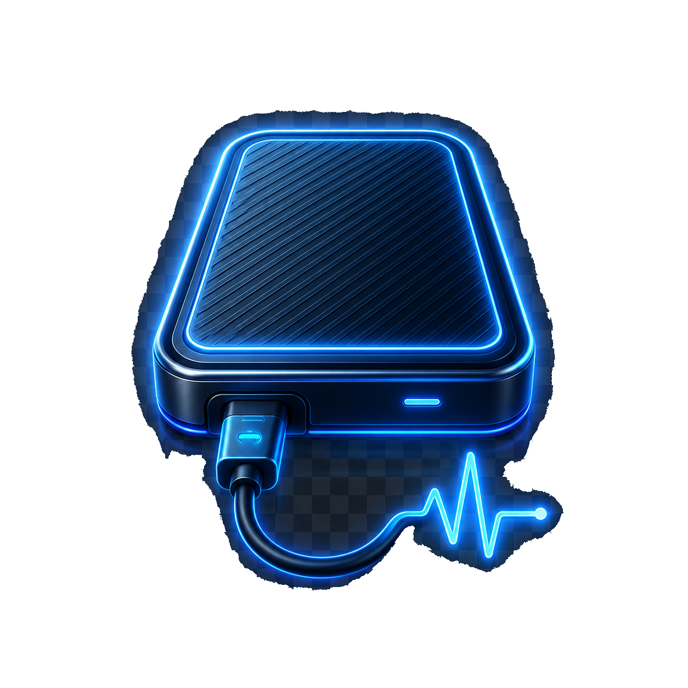

Retrouver mes
sons perdus
Scanne tes disques et dossiers
pour retrouver les fichiers manquants,
déplacés ou introuvables.
LostTrackr t’aide à retrouver, organiser et protéger ta musique.
Rien n’est modifié sans ta confirmation.
Scanne tes disques et dossiers
pour retrouver les fichiers manquants,
déplacés ou introuvables.
Ajoute un dossier et laisse LostTrackr
classer, renommer et organiser
tes nouveaux sons.
Analyse l’état de ta bibliothèque,
détecte les problèmes et garde
ta collection en bonne santé.
LostTrackr va chercher les morceaux que ton logiciel DJ ne retrouve plus. Rien ne sera modifié avant ta validation.
LostTrackr va inspecter ta bibliothèque DJ, tes dossiers musique et les disques connectés pour retrouver les fichiers déplacés.


LostTrackr commence toujours par un aperçu. La réparation ne sera appliquée qu’après ta confirmation.
Pour éviter les conflits, ferme ton logiciel DJ avant de lancer le scan.
Recherche des morceaux déplacés dans ta bibliothèque…
LostTrackr inspecte ta bibliothèque DJ, tes dossiers musique et les disques connectés. Aucun fichier n’est modifié pendant cette phase.
Les détails techniques restent cachés pendant le scan pour garder l’écran lisible.
LostTrackr a retrouvé une grande partie de ta bibliothèque. Voici ce qu’il te propose.
Tu gardes le contrôle total. Tout est sécurisé.
Compare les chemins cassés et les nouveaux chemins retrouvés avant d’appliquer quoi que ce soit.
Chemins cassés détectés
Nouveaux chemins retrouvés
La version actuelle pourra être restaurée si tu changes d’avis.
Ta bibliothèque est prête. Voici ce qui a été réparé et ce que tu peux faire ensuite.
La version actuelle a été sauvegardée avant chaque action.
Tes points de restauration sont sécurisés et prêts à être utilisés.
Contrôle les correspondances retrouvées. LostTrackr ne répare rien tant que tu ne confirmes pas.
Les chemins réparables pointent de nouveau vers les bons fichiers.
Aucun fichier introuvable après réparation.
Fichiers déplacés, disques débranchés, dossiers renommés… et ton logiciel DJ affiche des morceaux introuvables.
Un scan inspecte ta bibliothèque, tes dossiers musique et tes disques pour localiser chaque fichier déplacé. Aucune modification pendant cette phase.
Aperçu avant/après, sauvegarde automatique avant chaque action. Rien n’est modifié sans ta confirmation — beatgrids et cue points restent intacts.